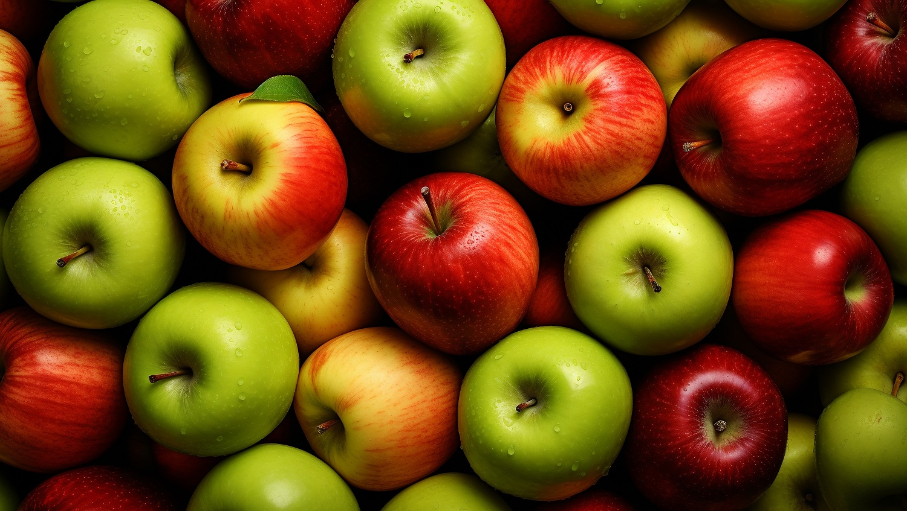

An apple is a round, edible fruit produced by an apple tree (Malus spp., among them the domestic or orchard apple; Malus domestica). Apple trees are cultivated worldwide and are the most widely grown species in the genus Malus. The tree originated in Central Asia, where its wild ancestor, Malus sieversii, is still found. Apples have been grown for thousands of years in Eurasia and were introduced to North America by European colonists. Apples have religious and mythological significance in many cultures, including Norse, Greek, and European Christian tradition. Apples grown from seed tend to be very different from those of their parents, and the resultant fruit frequently lacks desired characteristics. For commercial purposes, including botanical evaluation, apple cultivars are propagated by clonal grafting onto rootstocks. Apple trees grown without rootstocks tend to be larger and much slower to fruit after planting. Rootstocks are used to control the speed of growth and the size of the resulting tree, allowing for easier harvesting. There are more than 7,500 cultivars of apples. Different cultivars are bred for various tastes and uses, including cooking, eating raw, and cider or apple juice production. Trees and fruit are prone to fungal, bacterial, and pest problems, which can be controlled by a number of organic and non-organic means. In 2010, the fruit's genome was sequenced as part of research on disease control and selective breeding in apple production.
The apple is a deciduous tree, generally standing 2 to 4.5 metres (6 to 15 feet) tall in cultivation and up to 15 m (49 ft) in the wild, though more typically 2 to 10 m (6.5 to 33 ft). When cultivated, the size, shape and branch density are determined by rootstock selection and trimming method.[5] Apple trees may naturally have a rounded to erect crown with a dense canopy of leaves.[6] The bark of the trunk is dark gray or gray-brown, but young branches are reddish or dark-brown with a smooth texture.[1][7] Young twigs are covered in fine downy hairs; they become hairless when older. The buds are egg-shaped and dark red or purple in color; they range in size from 3 to 5 millimeters, but are usually less than 4 mm. The bud scales have very hairy edges. When emerging from the buds, the leaves are convolute, meaning that their edges overlap each other.[1] Leaves can be simple ovals (elliptic), medium or wide in width, somewhat egg-shaped with the wider portion toward their base (ovate), or even with sides that are more parallel to each other instead of curved (oblong) with a narrow pointed end.[7][1] The edges have broadly-angled teeth, but do not have lobes. The top surface of the leaves are glabrescent, almost hairless, while the undersides are densely covered in fine hairs.[1] The leaves are attached alternately by short leaf stems 1-to-3.5 cm (1⁄2-to-1+1⁄2 in) long. Blossoms are produced in spring simultaneously with the budding of the leaves and are produced on spurs and some long shoots.[5] When the flower buds first begin to open the petals are rose-pink and fade to white or light pink when fully open with each flower 3-to-4-centimeter (1-to-1+1⁄2-inch) in diameter.[1] The five-petaled flowers are group in an inflorescence consisting of a cyme with 3–7 flowers.[8] The central flower of the inflorescence is called the "king bloom"; it opens first and can develop a larger fruit.[6] Open apple blossoms are damaged by even brief exposures to temperatures −2 °C (28 °F) or less, although the overwintering wood and buds are hardy down to −40 °C (−40 °F).